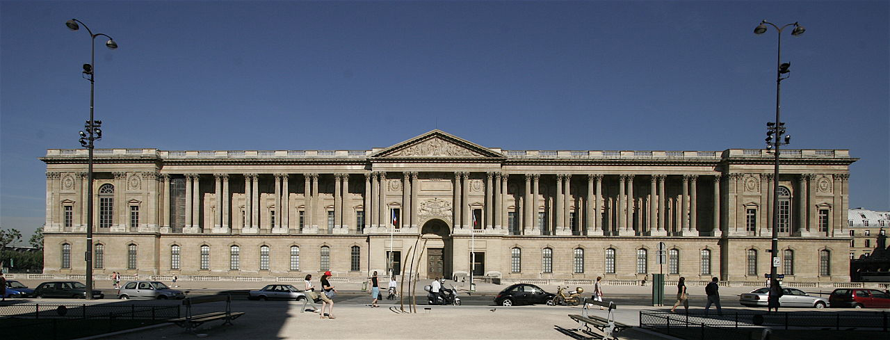

Lesson 3
Neoclassical(1750s-onwards) & Industrial styles(1850s-onwards)
Neoclassism style
What is the Neoclassical style?
Neoclassical architecture follows the same design as buildings made in antiquity and during the renaissance period. Some of these buildings will use some new materials such as metal framing.

What lead to the development of this style?
From the 17th century and onwards, a style called neoclassicalism became popular because people’s attitude towards authority has changed. This is because of a movement called the “The Enlightenment”, that created new schools which taught new scientific methods and new ways of thinking. Many scientific discoveries were founded during this time due to scientists' precise measurements when conducting research. Some of these discoveries proved theories that the Church did not support. New philosophical thinkers also had ideas that did not agree with the monarchy. Although most people were illiterate, the amount of working class people who were educated rose and their attitudes towards those in power began to change. They no longer trusted the words of those in power without question. This slow shift throughout this period ultimately influenced Architecture.
This style ultimately started when Madame de Pompadour, the lover of the King of France sent out a group of artists from France to Italy in order to study the arts and history of Italy and bring their findings back to France. After returning to France, these artists became famous and shared their love of the antiquity style with the newly established schools of architecture.

Due to these ideas and the bad governing of the French monarchy, a revolution began in 1788 which aimed on making the country more fair. After the French revolution, lavish displays of wealth were generally looked down upon and people preferred a more modest, intellectual look to public buildings. This attitude remained for a very long time and this style was generally used for any monumental buildings such as public and governmental buildings.
Click different parts of the building to learn more about buildings in this style:
Industrial style
What is the Industrial Style?
This style of architecture became popular around the 1800s in American and European countries during the industrial revolution. It was often built alongside neo-classical architecture and the two styles often featured ideas that clashed. While the neoclassical architecture held onto old traditions, this style of architecture embraces the change brought on by technology.
This style is characterized by its use of materials made possible by new technology such as iron, steel, and mass produced glass. Before this style became popular, people tried to hide the iron and steel inside of brick and stone, but then they began to embrace the changes in technology. It is a popular building style for both buildings and bridges.

What lead to the development of this style?
The invention that really set this off this new building style was the technological advancements made during the industrial revolution, particularly the mass production of cast iron. Cast iron is the refinement of molten crude iron cast into molds. After the steam engine was invented, furnaces could now process this iron much faster. By the mid 1800s, cast iron became commonplace. Glass also became more common and much cheaper to make. As refinement factories became more and more commonplace, metal began being used as framing in architecture, especially in factories as a way to fireproof them

By the first world fair 1851, there was sufficient amounts of these new materials in England to create a giant structure made from cast iron and sheet glass. This structure is meant to show off England’s technological prowess. While there were bridges made in this style before, this is the first building to be in the industrial style.
This style became popular because they make the nation who made them seem powerful and technologically advanced. In the 1889’s world's fair, the Eiffel tower was also created for a similar reason.

The Crystal Palace